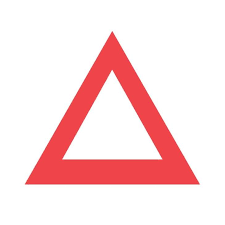

Explore My
Experience

SDET Intern
June 2025 – Present
- Worked on Arcon PAM modules like Digital Vault and Password Vault, by developing and executing automated test cases using Playwright.
- Contributed to Arcon CI modules such as Home Page and Auto Onboarding, by integrating Playwright tests into CI pipelines for continuous testing and quick regression detection.
- Identified, documented, and reported functional and security bugs in PAM and CI modules, enhancing product reliability, compliance, and overall test coverage.

Full Stack Developer
Director of Student Affairs, SRMIST
Nov 2022 – April 2024
- Developed a dynamic and interactive cultural festival website, ”Milan”, utilizing the MERN stack to create a scalable architecture capable of handling over 10,000 concurrent users during peak hours.
- Integrated RESTful APIs seamlessly into the website to provide real-time event updates, registration data, and notifications, resulting in a 40% increase in user engagement and interactivity.
- Implemented advanced security measures such as secure input validation and data handling techniques to protect user information effectively, achieving a 0% data breach rate and ensuring data integrity at all times.